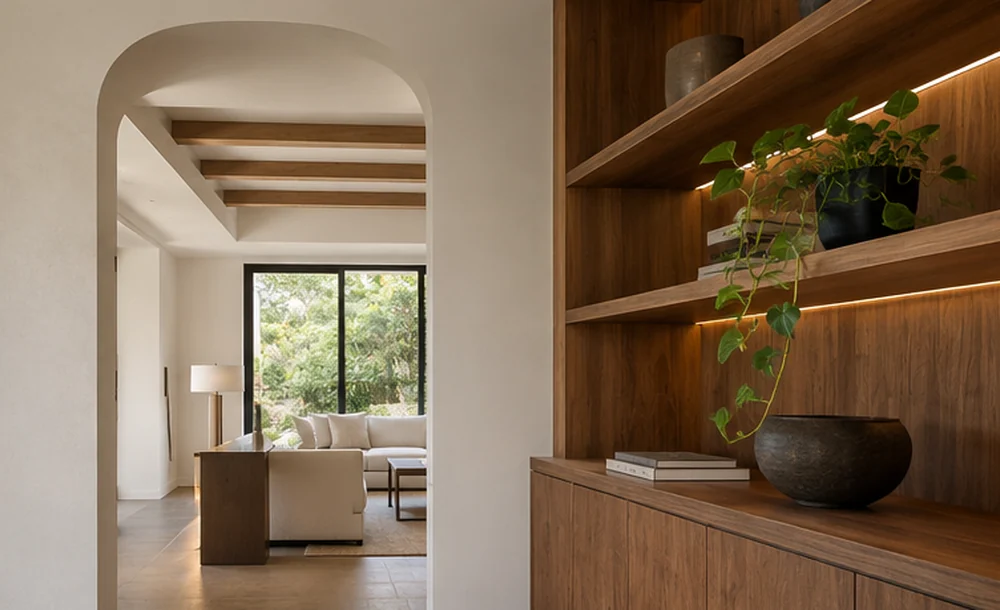
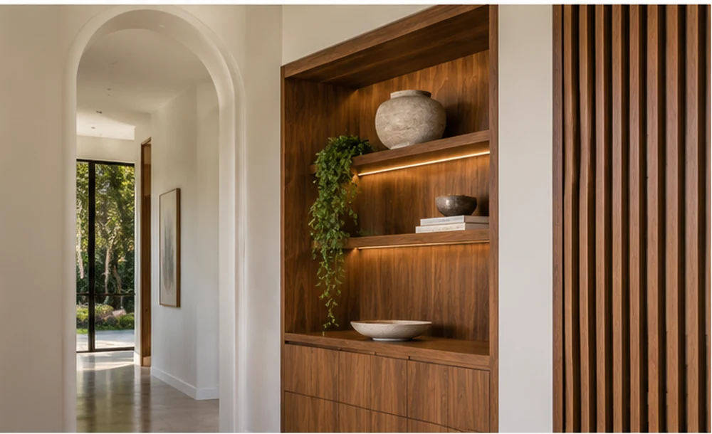

Repairs & finishing
Central FloridaScope of work
Drywall patches, trim repairs, painting touch-ups and smaller construction projects handled with the same attention to detail.



Drywall patches, trim repairs, painting touch-ups and smaller construction projects handled with the same attention to detail.
